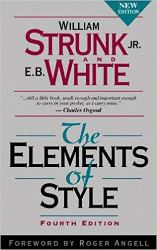
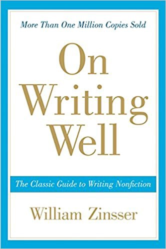
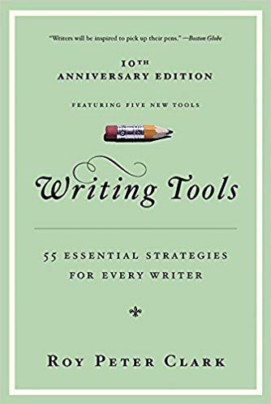

I used to think that way. Anytime I had to write, I would rush through it because I thought that writing wasn’t a skill that designers needed. I would rationalize my lack of writing skills by telling myself that designers designed, they didn’t write, after all my designs would speak for themselves.
Wow, was I wrong!
As a result, my work suffered because I couldn’t communicate my ideas in a clear and organized way either through writing or by talking about them. This caused me to have little influence within my team or with my clients. Once I realized the errors of my ways I began paying attention to my writing. I started writing with an intention to keep improving and using it as a tool in my design toolbox.
Today I want to share a few ways writing has helped me become a better designer. I will also include resources such as books, podcasts, and apps which I use to help me improve my writing skills.
Photo by A L L E F . V I N I C I U S Δ on Unsplash
Writing is designing with words.
It is a tool for designers to energize, inspire, and influence people to take action. By carefully selecting the words, I can make sure my message is received exactly as I intended it. On the other hand, when my writing is rushed through with lousy grammar, unorganized thoughts, and careless punctuation, it only adds confusion to the message. It opens the door for others to misunderstand and dilute my message. Good writing is crucial in getting my message across clearly and with impact.
Writing is an exploration. You start from nothing and learn as you go. - E. L. Doctorow. Designers write every day to communicate and influence. It is crucial that you write clearly and concisely to get your message across and move your ideas forward. Having a good idea isn’t enough though. You need to be able to sell your ideas through written communication. Some opportunities for designers to write are: email communication, blog posts, UX writing, design research, design presentations, documentation. Every opportunity to write is an opportunity to improve your writing. Here are some ways writing has helped me become a better designer. I have also included some exercises to help you practice each part.
Photo by A L L E F . V I N I C I U S Δ on Unsplash
Writing helps me clear my mind for better ideas.
Clearing my mind of the thoughts running around in my head helps to make room for new ideas and inspiration. The daily tasks I need to do take up way too much space. Thoughts such as “I need to schedule the design review with the development team?” Or “I need to meet Tianna to discuss the user story I’m working on.” occupy a lot of space in my mind which leaves little room for new thoughts. So clearing out the noise by writing them down is a great way to make room for new ideas to develop.
Exercise: Make a list of tasks you need to get done.
Time: 10 min.
Instructions: Take 10 minutes to get everything you need to get done out of your head. Use a paper or your favorite text editor to make the list, whatever you have around you at this moment.
Photo by A L L E F . V I N I C I U S Δ on Unsplash
Writing helps me think.
Ideas are rough when they first come out. By writing them down I can revise and organize them to uncover their true potential. Once I write down my thoughts I can easily rearrange them to support the main point I am trying to make. I can also share the ideas and get feedback to improve them and make them crisp.
Exercise: Organize and support your main idea.
Instructions: Think of a design problem you need to tackle. Write it down. Then write out supportive ideas around your main idea. Once you have enough ideas, you can combine/prioritize them.
Writing helps me understand.
Whenever I learn a new concept I can speed up my understanding of it by writing down what I have comprehended. If I can summarize the idea and list the key points and ways to apply the new concept I can build my design vocabulary.Early in my UX career, I started a project called UX Alphabet. The goal of this project was to research UX concepts which were new to me and write short descriptions about them. This exercise helped me quickly learn and understand new methods and techniques used in the field of UX.
Exercise: Learn more about a design topic.
Instructions: Brainstorm some topics related to design which interest you. Do some research online or find books on that topic. Once you feel you have a grasp of the main idea, write down your understanding of that topic. Are you able to clearly write down your understanding? If so, that’s great, if not then repeat the process until what you have written is clear enough to share with others.
Photo by A L L E F . V I N I C I U S Δ on Unsplash
Writing helps me communicate.
I wish I could speak face to face with everyone I have to communicate with but until I can be beamed across the office or around the globe I have to write emails to communicate. Whether it is sharing an idea, providing an update, or convincing others of why my idea is valid, I need to carefully craft my emails for the greatest impact. Writing has also helped improve my listening skills. I have noticed that I now listen intently and I am focused on actively listening to understand. My verbal communication has gotten better as well. When I speak I am able to organize my thoughts faster to speak clearly and get to the point faster.
Exercise: Read it aloud
Instructions: Next time you write, whether it’s an email or any other type of writing, read it aloud to yourself. If you find yourself stumbling and not being clear in your meaning then rewrite. Keep rewriting it until you are happy with the clarity and tone for your audience. A few minutes spent revising your writing will have a profound effect on the impact you can make.
Photo by A L L E F . V I N I C I U S Δ on Unsplash
Writing improves my mental health.
The stresses of work deadlines and daily life can weigh me down mentally and negatively effect my creativity. Setting aside time to write on a daily basis helps to reduce my anxiety and stress. Writing is linked to an improved mood, reduced stress, and well-being. I have also noticed that since expressing my thoughts through writing has had a therapeutic effect on me.
Exercise: Write a Stream Of Consciousness Page
Time: 10 min
Instructions: Open your favorite text editing tool or use a pen and paper and start writing. Write whatever comes to mind. Don’t self-edit and don’t edit what you write. Stay in writing mode for the full 10 minutes. Let the words and thoughts flow out. This is your chance to empty your mind of your thoughts to make room for new and amazing ideas. Don’t over think it and keep writing without stopping.
Photo by A L L E F . V I N I C I U S Δ on Unsplash
Writing means sharing. It’s part of the human condition to want to share things — thoughts, ideas, opinions. — Paulo Coelho
Here are some helpful resources to help you along your writing journey:
Want to make a big impact on your writing? Strunk and White help convey the principles of English with a unique tone, wit, and charm.

The Elements of Style, Fourth Edition — Strunk and White
YOU MUST READ THIS BOOK!
Learn fundamental principles as well as the insights of a distinguished writer and teacher to button up your writing skills.

On Writing Well — William Zissner
Podcasts
This book is essential reading to help make your writing more accessible, entertaining, and inspiring. Tip: Focus on implementing one tip at a time as you build your writing toolbox.

Writing Tools: 55 Essential Strategies for Every Writer — Roy Peter Clarke
Podcasts
Love 30-day challenges? This writing boot camp will get you in the habit of writing in only 10 minutes a day. Beware: Tim speaks with passion about the craft of writing and it is contagious. Plus he is British so of course, anything he says is marvelous.
Death of 1000 Cuts — Couch to 80K Bootcamp by Tim Clare
Grammar Girl provides short, friendly grammar, punctuation, style, and business tips to improve your writing.
Grammar Girl’s Quick and Dirty Tips for Better Writing
Apps
A pleasant focused writing experience combined with effective document management, fast syncing and flexible export make Ulysses a great app for writers of all kinds.
Grammarly
This is a great tool to help you proofread your work to make sure it is clear, effective, and mistake-free.
Hemingway App
Want to make sure your writing is easy to understand and not full of jargon? Hemmingway app makes your writing bold and clear.
The art of writing is the art of discovering what you believe. - Gustave Flaubert
Practice, practice, practice.
Writing well takes practice, revision, reflection, and feedback to improve. Consistency is key, so make use of daily opportunities such as such as writing emails, social media posts, sharing your designs, writing documentation, or creating design presentations to constantly improve your writing.
Writing is powerful. Through writing, designers can inform, inspire, and influence others to move their ideas forward. Good designers come up with ideas but great designers know how to sell those ideas. By adding writing to your design toolbox you can make sure you are communicating clearly and effectively and on your way to greatness.
Go forth and write!